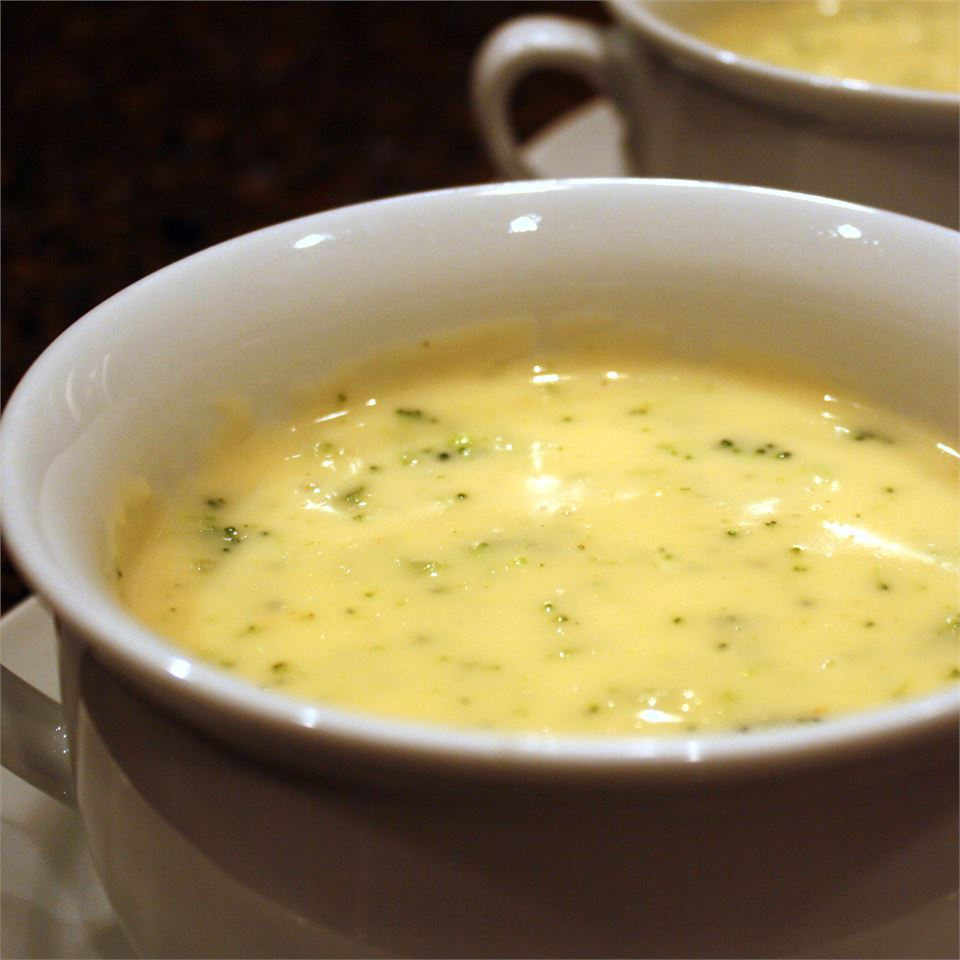

Broccoli Soup

Description
I've always loved soup, and i realized that I have more fun making soup. This is one of my first attmpts at making a soup from a recipe i found on TicTok. I made somemistaks along the way but this is the ironed out reipe that I'm sure you'll enjoy.
The combination of orzo, feta, and broccoli really cant be beat. The texture from the orzo almost gives this soup a creay texture that I love.
Ingredients
- 1 lb broccoli, chopped
- 4 cups vegetable broth
- 2 cups water
- 3 cloves garlic, minced
- 3/4 cup orzo
- 3.5 oz feta, crumbled
- 1 small onion, diced
- 1 tsp salt
- 1 tsp pepper
Steps
- saute onions and garlic
- Add broth, water, broccoli, salt and pepper
- Bring to a boil, reduce heat and simmer for 30 minutes
- Use a potato masher and mash everything into submisson
- Add orzo and cook uncoverd, stirring occasionaly, for 15 minutes
- Remove from heat and add feta
- Enjoy